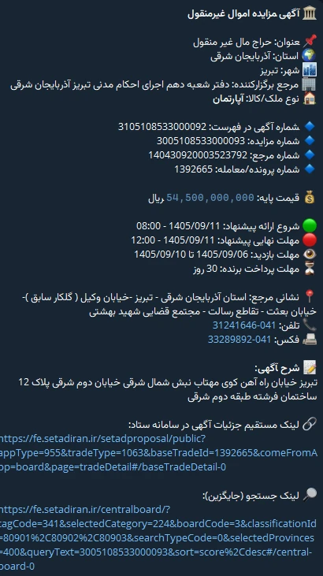

فرصتهای مهم را
زودتر پیدا کنید.
تزگور آگهیهای مزایده و مناقصه منتشرشده در سامانه ستاد ایران را رصد میکند و متناسب با فیلترهای شما در تلگرام میفرستد. با دسترسی سریع به لینک آگهی، شرایط و مستندات، زمان جستوجو را کم کنید و تصمیم دقیقتری بگیرید.
بات مزایدات ستاد - فعال در تلگرام؛ برای شروع روی دکمه بزنید.

مزیتهای روشن
چرا تزگور؟
یک دستیار ساده برای اینکه میان حجم آگهیها گم نشوید و فقط سرنخهای مرتبط با کسبوکار خود را ببینید.
فیلترهای دقیق
استان و دستهبندی موردنظر را انتخاب کنید تا پیامهای مرتبطتری دریافت کنید.
صرفهجویی در زمان
به جای جستوجوی مداوم، آگهیهای تازه را در همان جایی ببینید که هر روز استفاده میکنید.
لینک مستقیم
مسیر رسیدن به صفحه آگهی و اطلاعات تکمیلی کوتاه و روشن است.
دسترسی به جزئیات
با کلیک روی لینک ارسالشده توسط ربات، جزئیات، شرایط و مستندات آگهی را «بدون ثبت نام در ستاد» سریع بررسی کنید.
راهنمای فرصتهای خرید
مناقصه و مناقصات
مناقصه یک رقابت سازمانیافته است که در آن کارفرما تأمین کالا یا اجرای خدمت را به پیشنهاددهندهای میسپارد که ترکیب مناسبی از کیفیت، توان اجرایی و قیمت ارائه کند. این سازوکار به سازمانها کمک میکند نیازهای خود را با هزینه منطقی و نتیجه قابل اتکا تأمین کنند.
ادامه مطلب... ⌄
مناقصات معمولا در مقیاس کوچک، متوسط و بزرگ برگزار میشوند و مراحل آنها میتواند شامل پیشبینی منابع مالی، تعیین روش برگزاری، آمادهسازی اسناد، ارزیابی توان کیفی، انتشار فراخوان، بررسی پیشنهادها و انعقاد قرارداد باشد. شرایط هر فراخوان مشخص میکند چه اشخاص حقیقی یا حقوقی و در چه بازهای امکان حضور دارند.
از نظر بررسی، مناقصه ممکن است تکمرحلهای باشد که پاکتها در یک جلسه بررسی و نتیجه اعلام میشود، یا دومرحلهای که ابتدا توان فنی و بازرگانی پیشنهادها ارزیابی و سپس قیمتها بررسی میشوند. از نظر دعوت نیز مناقصه عمومی برای همه واجدان شرایط باز است و مناقصه محدود با دعوت از گروه مشخصی از شرکتکنندگان انجام میشود.
در مناقصه، خریدار به دنبال کیفیت مناسب با کمترین هزینه است، در حالی که در مزایده فروشنده تلاش میکند دارایی یا خدمت خود را با بیشترین پیشنهاد واگذار کند. اسناد مناقصه نیز معمولا شرح پروژه، تضمینها، مهلت تحویل، معیارهای ارزیابی و شرایط عمومی و خصوصی قرارداد را در بر میگیرد.
برای مشارکت بهتر باید زمان و مکان جلسه، مدارک، ضمانتنامه و الزامات فنی را از متن رسمی آگهی بررسی کرد. دسترسی منظم و سریع به آگهیهای تخصصی، فرصت آمادهسازی پیشنهاد دقیق و افزایش شانس موفقیت را بیشتر میکند.
کشف داراییها و فرصتها
مزایده و مزایدات
مزایده روشی رقابتی برای فروش کالا یا مال است که در آن پیشنهادهای بالاتر بررسی میشوند و هدف برگزارکننده دستیابی به بهترین ارزش ممکن است. برای خریدار نیز این فرایند راهی برای پیدا کردن داراییهای خاص، مازاد یا عرضهشده با شرایط مشخص فراهم میکند.
ادامه مطلب... ⌄
برگزاری مزایده از معرفی موضوع و ارزیابی آن شروع میشود و پس از تعیین قیمت پایه، شرایط پرداخت و زمان، آگهی منتشر میگردد. در پایان، پیشنهادها جمعآوری و برنده مطابق مقررات اعلام میشود. مزایده میتواند عمومی، خصوصی، دولتی، حضوری یا آنلاین باشد.
در مزایدههای اجباری، فروش ممکن است بر اساس حکم مرجع قانونی انجام شود، اما در مزایده اختیاری مالک یا سازمان با تصمیم خود دارایی را عرضه میکند. اموال منقول مانند خودرو و تجهیزات و اموال غیرمنقول مانند زمین و ملک هرکدام مدارک و ضوابط ارزیابی خاص خود را دارند.
مزایده الکترونیکی ستاد، امکان مشاهده آگهی، بررسی قیمت پایه و ارسال پیشنهاد را در بستر آنلاین فراهم میکند. متقاضی باید پیش از هر اقدامی، اسناد، مهلت، مبلغ تضمین، شرایط تحویل و اعتبار اطلاعات را از منبع رسمی بررسی کند.
تزگور با پایش آگهیهای قابل دسترس، مسیر پیدا کردن فرصتهای مرتبط را کوتاه میکند. ربات جایگزین بررسی نهایی منبع رسمی نیست، اما کمک میکند آگهی مناسب را سریعتر ببینید و برای مطالعه مستندات به لینک درست برسید.
پاسخهای کوتاه و کاربردی
سؤالات متداول
۱. ربات تزگور چه خدماتی ارائه میدهد؟⌄
تزگور آگهیهای مزایده املاک و خودرو را از سامانه ستاد ایران رصد میکند و بر اساس فیلترهای شما در تلگرام میفرستد. مزیت مهم آن استخراج لینک مستقیم مستندات آگهی و ارسال آن در تلگرام است.
۲. آیا همه مزایدههای کشور در ربات نمایش داده میشوند؟⌄
ربات آگهیهای منتشرشده و قابل دسترس سامانه ستاد را دنبال میکند. ممکن است بعضی موارد به علت محدودیت فنی یا دسترسی در ربات نمایش داده نشوند.
۳. آگهیها هر چند وقت یکبار ارسال میشوند؟⌄
ربات به شکل دورهای سامانه ستاد را بررسی میکند و موارد تازه و منطبق با فیلترهای شما را پس از شناسایی میفرستد.
۴. آیا انتخاب همزمان چند استان ممکن است؟⌄
بله. میتوانید یک یا چند استان را انتخاب کنید تا آگهیهای مناطق موردنظر به شما برسد.
۵. آیا میتوان فقط یک نوع آگهی را دریافت کرد؟⌄
بله. با انتخاب دستهبندیهایی مانند املاک یا خودرو، دریافت پیامها را به حوزه موردنظر محدود کنید.
۶. با تغییر فیلترها آگهیهای قبلی دوباره ارسال میشوند؟⌄
خیر. تمرکز ربات روی آگهیهای جدید و مرتبط است و تغییر فیلتر به معنی ارسال دوباره همه موارد قبلی نیست.
۷. اشتراک ربات چه مدت اعتبار دارد؟⌄
اعتبار به پلن خریداریشده بستگی دارد. پس از پایان دوره، برای ادامه دریافت آگهیها اشتراک را تمدید کنید.
۸. چگونه اشتراک ربات را فعال کنم؟⌄
وارد ربات شوید، پلن موردنظر را انتخاب کنید، هزینه را بپردازید و تصویر رسید را ارسال کنید. پس از بررسی و تأیید، اشتراک فعال میشود.
۹. آیا امکان مشاهده جزئیات و اسناد مزایده وجود دارد؟⌄
بله. آگهیهای ارسالی لینک صفحه مربوط را دارند تا جزئیات، شرایط و اسناد منتشرشده را بررسی کنید.
۱۰. آیا اطلاعات آگهیهای تزگور رسمی و معتبر است؟⌄
اطلاعات از سامانه ستاد ایران دریافت میشود. برای تصمیمگیری، شرکت در مزایده یا پرداخت وجه، آخرین شرایط را حتما از منبع رسمی بررسی کنید.
۱۱. اگر آگهی موردنظرم را دریافت نکردم چه کار کنم؟⌄
ابتدا استانها و دستهبندیهای انتخابی را بررسی کنید. اگر مشکل ادامه داشت، از بخش پشتیبانی ربات با ما در تماس باشید.